FSAE Aero Package Manufacturing
Manufacturing the TSAE2027 aerodynamic package in-house — from foam plugs and fiberglass molds to infused carbon main planes, foam-core endplates, and hand-laid sidepods.
Project details
1. The Challenge & Engineering Objectives
In previous seasons, the Formula Student team outsourced aerodynamic package fabrication to external shops. This vendor-dependent workflow resulted in overbuilt, overweight components with limited room to iterate. Facing the challenge of having no team members with prior end-to-end composite manufacturing experience, we committed to bringing the entire tooling, molding, and layup process in-house to reduce vehicle mass.
My contribution was on the manufacturing side: foam plugs and surface preparation, fiberglass molds, carbon layup and infusion, and assembly support. The aerodynamic design and CFD were led by other team members.
This was my first end-to-end composites manufacturing project. The page is a working record of the process and the mistakes, not a claim of professional-level composites experience.
The objective was not just to make a wing. It was to build a process the team could repeat:
- Replace vendor-built parts with in-house tooling and documented process steps.
- Build matched molds for the front and rear wing main planes, not one-off shells.
- Produce foam-core endplates and hand-laid sidepods without autoclave equipment.
- Keep surface quality and dimensional alignment good enough for aerodynamic testing.
- Leave behind a process the next TSAE team can pick up and improve.
2. Manufacturing Approach
We split the package into three tracks, each using the lowest-complexity method that fit the part:
- Main planes: fiberglass negative molds and resin infusion for the front and rear wing main planes.
- Endplates: vacuum-bagged carbon skins around an XPS foam core.
- Sidepods: hand-laid carbon over a sacrificial foam form, with the foam dissolved after cure.
The aero shape and targets came from the team's design work; my scope started with those CAD surfaces and the tooling needed to reproduce them. All three tracks share the same process discipline: surface preparation, release, controlled cure, and trimming.
2.1 Main-plane tooling: foam plug to fiberglass molds
The front and rear wing main planes use the same negative-mold workflow. The airfoil is split into two halves around a flange, and each half gets its own fiberglass mold. The plug starts as a foam representation of the airfoil; the molds are built from that plug, then used to infuse the carbon skins.
Foam plug
- Start with a 3D-printed airfoil profile at the required chord and section.
- Cut a foam block to the wing span, attach the profile templates to both ends, and hot-wire cut along the profile.
- Fix MDF flange boards at the leading and trailing edges, extending roughly 15 cm beyond the airfoil, to create the split surface.
- Seal the board-to-foam joints with clay so resin cannot leak under the flange.
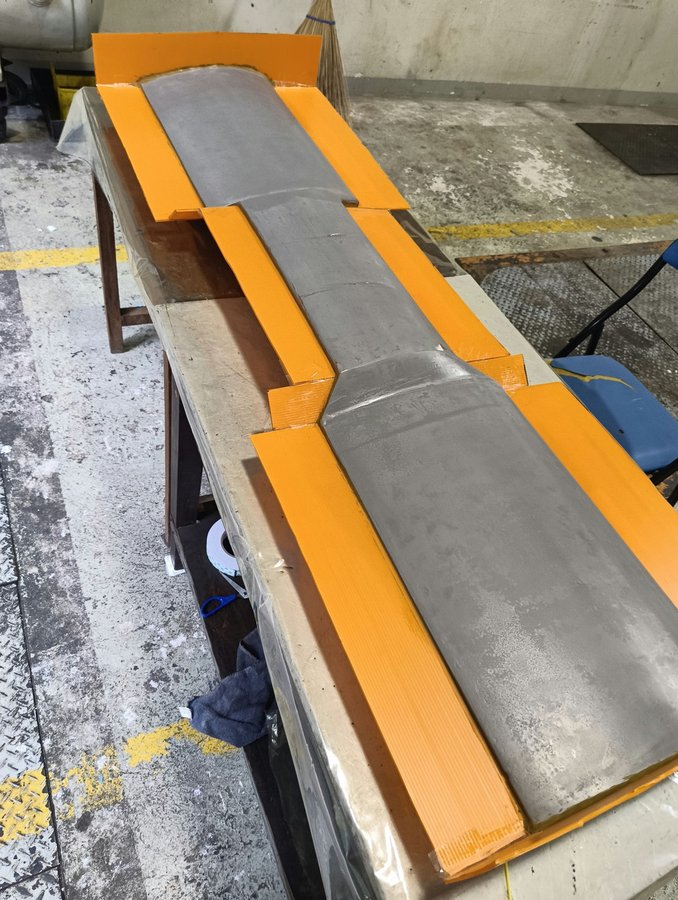
Surface preparation
- Fill holes and low spots with acrylic filler.
- Sand with a sanding block, working along the span so the airfoil section stays true.
- Seal the foam with a thin, foam-specific epoxy coating — two thin coats rather than one heavy coat, so it does not run and create drips.
- Sand the cured coating flat, then apply a thin 2K yellow filler and sand it back.
- Apply a 2K primer and sand to a smooth, consistent surface before release.
Split line and release
- 3D-print a jig that holds the fiberboard flange at the correct height along the split line.
- Fit the fiberboard around the leading and trailing edges and seal the remaining gaps with clay.
- Clean the surface with IPA.
- Apply TR104 release wax in four cycles: coat, wait about 10 minutes, wipe clean, and repeat. Leave the final coat for about 30 minutes.
- Apply two thin, uniform coats of PVA release film.
Fiberglass mold layup
- Apply two coats of pigmented gelcoat (pink, for coverage visibility), then leave it for about 30 minutes before the fiberglass.
- Lay up the first two layers with CSM 200, cut into manageable pieces, and wet them out with polyester resin. Consolidate each piece by dabbing with a brush to avoid trapped air; these first layers set the surface quality.
- Follow with one layer of woven roving 400–600, wet out with polyester resin. Keep it in one piece where possible and consolidate it carefully.
- Finish with CSM 600, wet out and consolidated by dabbing rather than flooding with resin.
- The mold is a polyester/fiberglass tool; the carbon parts use a separate six-hour epoxy system.
- Leave the first half to cure for about 24 hours.
- Remove the fiberboard flange and clay, apply release to the exposed flange, and lay up the second half using the first mold as the split surface.
- Drill matching alignment holes through the flange and fasten the halves for alignment.
- Finish the mold surfaces with 400, 1000, 1500, and 2000 grit paper, followed by 3M Finish It polish.
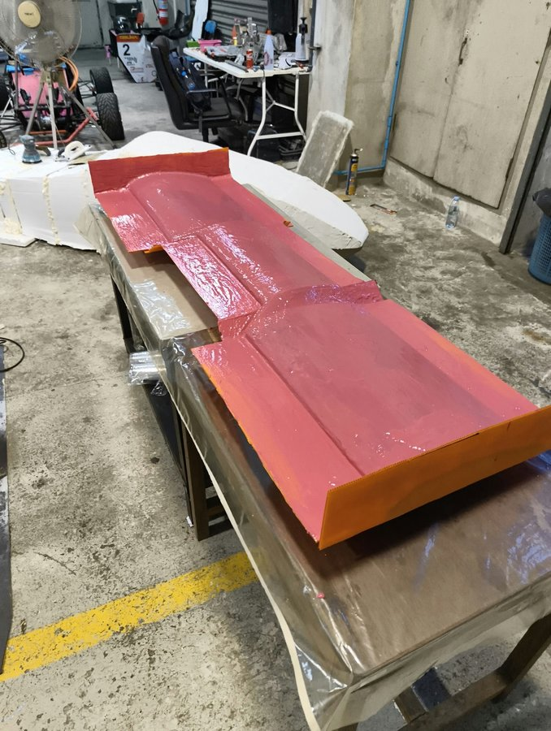
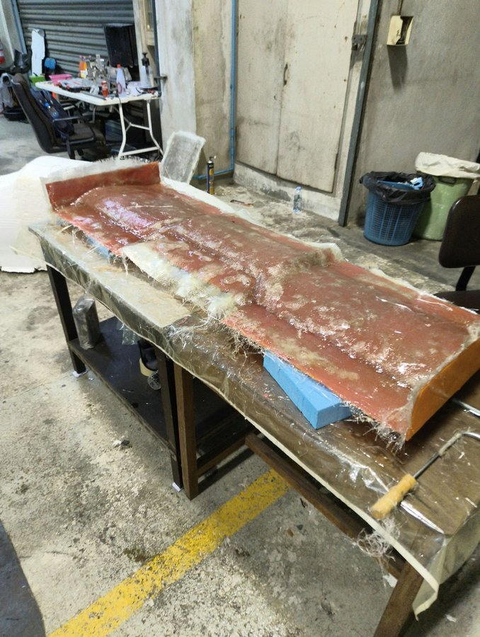
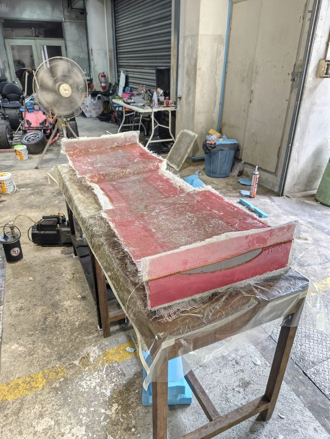
Lesson learned: lay up in stages
On an early mold I laid the fiberglass up in one large batch instead of building it in layers. The thick stack trapped air and produced bubbles and extra rework. The corrected process is the one above: CSM 200 in small pieces first, consolidating each piece before adding the next; then the woven roving; then the CSM 600. The first two layers set the surface quality. Rushing them creates more rework than it saves.
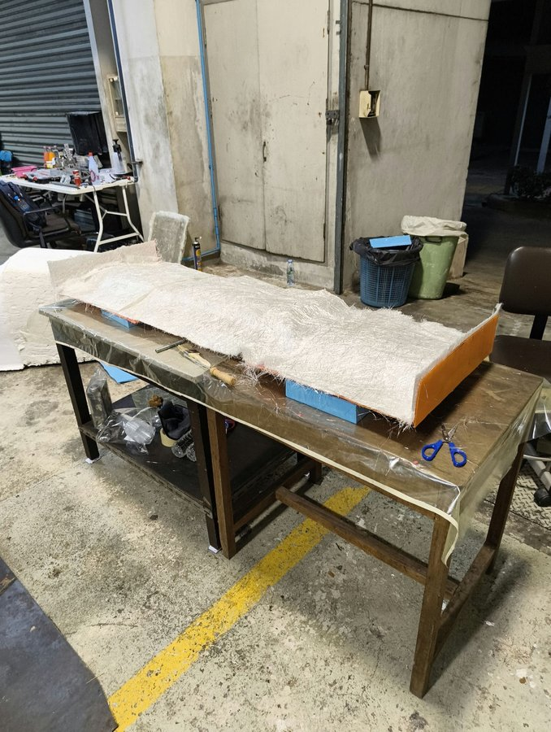
Carbon infusion and assembly
- Apply release wax and PVA to both mold halves.
- Lay three plies of 245 GSM carbon into the mold half.
- Add peel ply and flow mesh, then seal the vacuum bag over the mold half and connect the vacuum and resin lines.
- Pull at least 0.8 bar of vacuum and use a resin trap before the pump.
- Infuse with a six-hour epoxy system, then leave the part to cure for 24 hours.
- Demould, trim the carbon, and dry-fit the wing.
- Assemble the upper and lower skins around the ribs and spar. Use 3M DP420 or an epoxy thickened with lightweight filler and carbon offcuts.
The rear wing followed the same workflow in its own mold. These photos show the rear-wing mold, the skin under vacuum during infusion, and the demoulded skin.
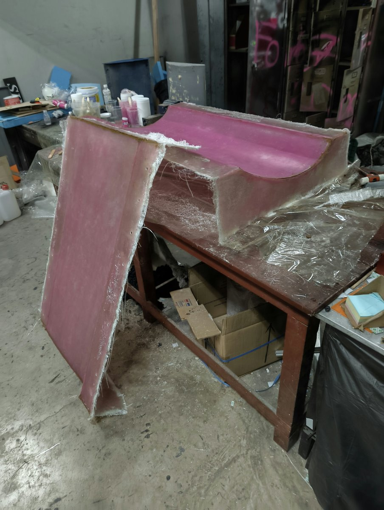
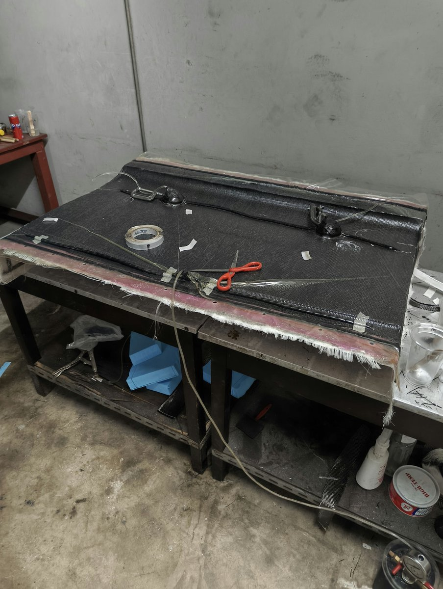
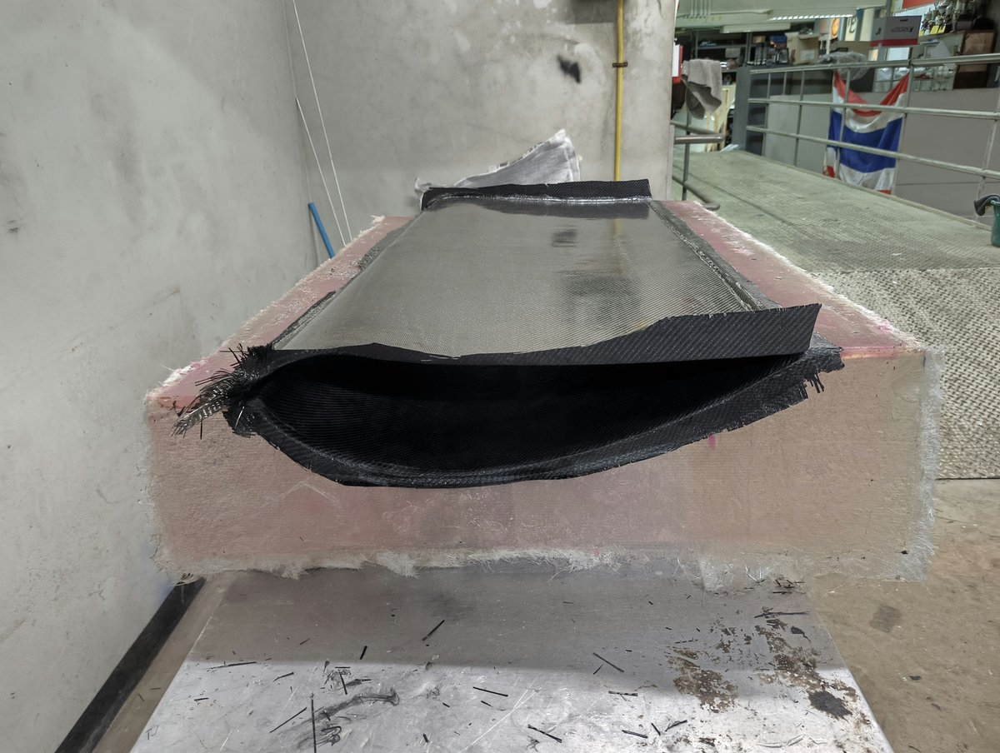
2.2 Endplates: carbon/foam sandwich
The endplates are a three-layer sandwich: carbon skin, XPS foam core, carbon skin. The skins are flat laminates, so they are laid up on glass rather than in a mold.
- Clean the glass and apply TR104 wax in three cycles.
- Cut the two carbon skins from 245 GSM fabric.
- Mix six-hour epoxy at roughly 80% of the dry fabric weight.
- Wet the glass, lay the carbon, and wet out each ply until the fabric is fully saturated.
- Add peel ply and breather, then seal the vacuum bag. Pull at least 0.8 bar for six hours and leave the laminate to cure for 24 hours.
- Demould, remove the peel ply, and CNC-cut the skins to the endplate profile.
- CNC the XPS core to the required thickness, then bond the skins to the core with epoxy.
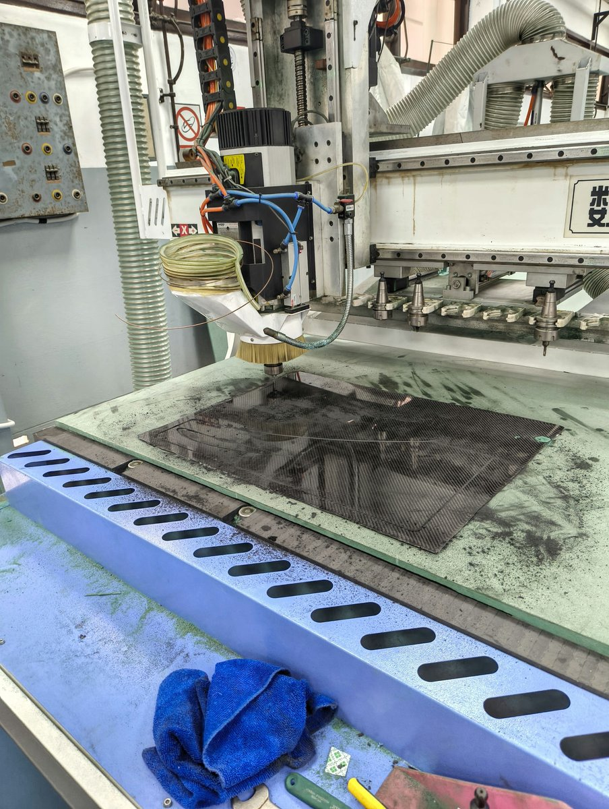
2.3 Sidepods: foam form, hand layup, dissolved core
The sidepods use a different trade-off: a sacrificial foam form instead of a closed mold. The foam is shaped to the outside geometry, the carbon is laid directly over it, and the foam is dissolved after cure.
Foam form
- The sidepod can be read as two 2D profiles: one from the side and one from the top.
- Laser-cut MDF templates for both profiles, place them on a foam block, and hot-wire cut the shape.
- Shape the fillets by hand with a sander, using 3D-printed fillet guides to check the radius.
Surface preparation
- Sand the foam smooth, then fill holes and joints with acrylic filler.
- Sand the filler flush with the foam.
- Apply a foam-specific epoxy coating in two thin coats, then sand to about 400 grit.
Carbon layup
- Apply a peel-ply layer first to keep the carbon from bonding to the foam.
- Lay three plies of 245 GSM carbon.
- Mix laminating epoxy at roughly 80% of the dry fabric weight and wet out every layer.
- This part is hand-laid without vacuum, so work the resin into the weave carefully and avoid dry patches.
- Leave the part for 24 hours.
- Dissolve the foam with acetone, remove the peel ply, trim the edges, sand the surface, and apply a final epoxy seal coat.
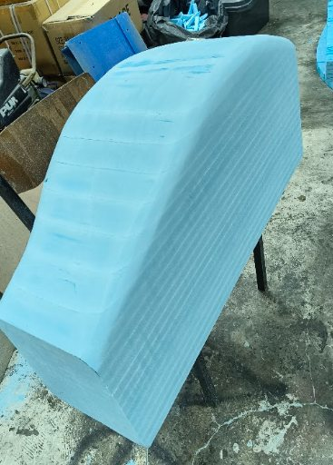
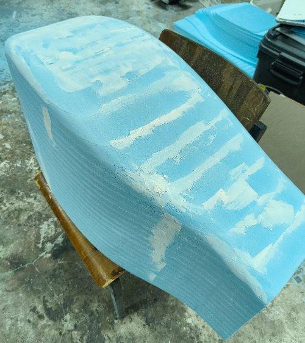
2.4 Process controls
- Release is a process step. A missed wax or PVA coat can ruin a mold or a part; the release schedule is written down and checked.
- Vacuum integrity matters. The wing infusion and endplate vacuum bagging are pulled to at least 0.8 bar. The infusion line includes a resin trap to protect the pump.
- Alignment is built in. The mold halves are drilled and fastened through the flange so the two tooling halves stay aligned.
- Cure time is not optional. The six-hour epoxy gives working time; the 24-hour cure gives the laminate enough strength to demould without distorting.
- Lay up in stages. Large batches of fiberglass trap air; build the mold skin in small CSM 200 pieces, then the woven roving, then the CSM 600.
- The process is being documented. Material weights, layer counts, and step order are recorded as they are confirmed, so the next part does not depend on memory.
This is a working, first-generation playbook, not a qualified aerospace process. Core thickness, final trim dimensions, and laminate schedules should be confirmed against the CAD and the car's load cases before each part is bonded.
Key Engineering Takeaway
"The biggest gain from bringing composites in-house was not a single part, but control over the process: the ability to see where a defect came from, correct it, and make the next layup better."
3. Results, Impact & Current Status
The in-house workflow has removed external fabrication from the critical path and established a first-generation internal process the team can refine. The work so far has produced main-plane mold halves, a demoulded rear-wing skin, a front-wing assembly with all elements fitted, and a shaped sidepod foam form in surface preparation. The dry-fit front wing was weighed before bonding; final hardware checks and aerodynamic testing remain.
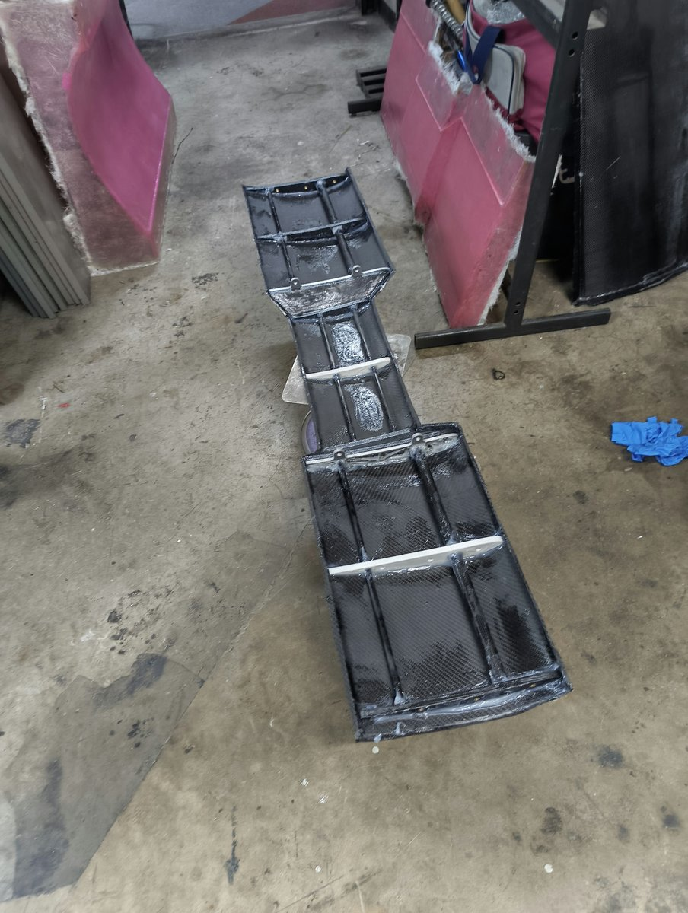
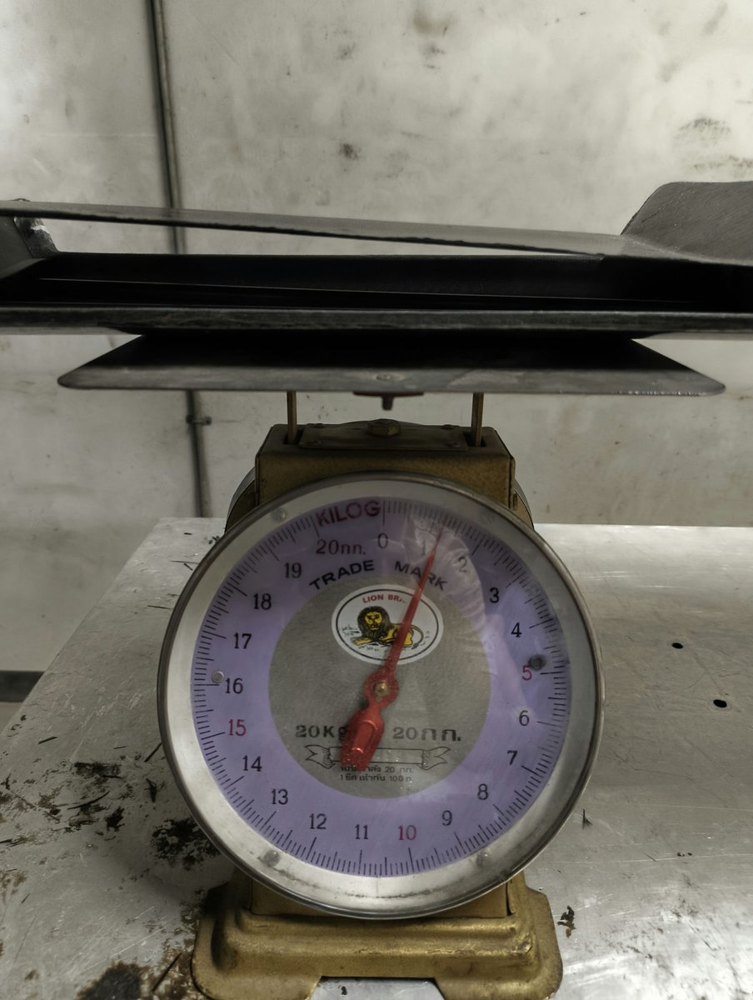
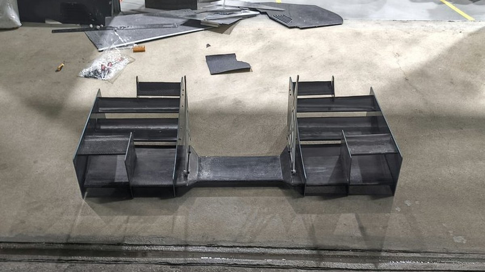
The intended change is structural: a geometry revision should become an internal tooling and layup task the team can plan, execute, and inspect, rather than a purchase order and a waiting period. The process is being documented so the next TSAE team has a starting point, and the first front-wing assembly will provide a baseline for planned aerodynamic testing.
References & credits
These are the tutorial references used while developing the process. The tooling, implementation, and mistakes documented here are the team's own.
- Building a Rear Wing with Carbon Fibre and Nomex — Easy Composites
- How to Create a Fiberglass Part From Scratch — Mcgurr Entertainment
- Fibreglass/FRP Split-Mould Making Guide — Easy Composites
- Beginner's Guide to Resin Infusion for Carbon Fibre Parts — Easy Composites
- How to Hand Laminate & Vacuum Bag a Simple Carbon Fibre Part — Easy Composites